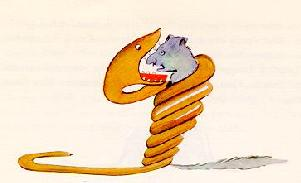
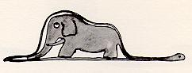

我六岁的时候，看到过一本写原始森林的书，名叫《真实的故事》，书中有一幅精彩的插图。 上面画着一条蟒蛇正在吞吃一只猛兽。照原样画下来就是这个样子。

书中是这样写的：“这些蟒蛇不加咀嚼，就把它们捕获的食物整个吞到肚里，之后就不再能动弹了。它们睡上六个月，来消化吞下的食物。” 那时，我对丛林中的惊险事情想得很多，于是，我用彩色铅笔画出了我的第一幅图画。我的第一张图画是这样的。

我把我的杰作拿给大人们看，并问他们看了害怕不害怕。 他们回答我说：“一顶帽子有什么好怕的？” 我画的不是一顶帽子，是一条蟒蛇正在消化一头大象。于是我又把蟒蛇肚子里的情形画了出来，好让大人们能够看懂。 这些大人啊，总得要别人给作解释。下面就是我的第二张图画。

大人们劝我，还是把这些剖开的，或者完整的蟒蛇画丢到一边去吧，多关心点地理、历史、算术和语法为好。 就这样，在我六岁那年，我只好放弃了美好的画家生涯。我的第一张和第二张图画都不成功，使得我灰心丧气了。 大人们自己总是什么也弄不明白，还得要孩子们给他们翻来覆去地作解释，真叫烦死人。
后来，我不得不选择另一种职业，学会了驾驶飞机。我几乎飞遍了整个世界。的确，地理知识可真帮了我的大忙。 我一眼就能把中国和美国的亚利桑那州分辨出来。要是夜里迷航的话，地理知识是非常有用的。
就这样，在我的生活经历中，我跟许多正经的人有过频繁的接触。 我在大人们的圈子里生活了很长时间，仔细地观察过他们，但这并没有怎么改变我对他们的看法。
每当我遇到一个头脑稍为清醒的大人，我就拿出我一直保存着的第一张画试他一试。我想知道，他是否真能看懂。 可他总是回答说：“这是一顶帽子。”于是我就再也不跟他谈什么蟒蛇啊，原始森林啊，星星啊，而是说些他能听得懂的事情。 我跟他谈桥牌啊，谈打高尔夫球呀，聊聊政治和领带。这么一来，这个大人倒挺高兴，因为他结识了一个通情达理的人。